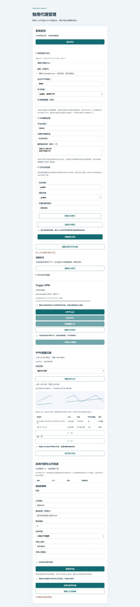

默认部署候选已完成隔离演练
默认Compose空卷启动、浏览器绑定、认证、反代/目录、候选确认、重复启动及重建保留均通过；同域名手工证书并存时自动签发、可信握手和续期也通过。候选证据。运行进程的UID、全部能力集和NoNewPrivs已独立检查。启动权限与预检设计。
公开固定摘要镜像、服务器80/443、真实公共ACME及后台确认已验证；备份/冷还原和重建保留通过。最后的真实长稳见24小时验收。
当前实现边界
设置模型、严格解码、单次迁移、schema 3 旧程序拒绝、双阶段入口状态机和鉴权接口已形成；真实网关验证新旧端口/域名同时可达及旧监听关闭。有界验证证据。已补充最终部署模式的持久读取、动态来源、受限子目录绑定、证书管理与中文设置页面；服务器已运行公开摘要镜像，完整默认Compose、恢复工具和80/443交接已验收；正式发布仍待24小时长稳。
数据库首次保存业务设置后升级为schema 3，旧程序不能再打开；配置回滚使用支持此版本的新程序，不还原旧TOTP步长和恢复码状态。入口撤回保留等待期间旧VPN身份的最新续期修订，不恢复成过期旧证书。
不可变部署边界与可变业务设置
数据目录、内控端口、socket、受信任挂载根及镜像权限属于部署边界。域名、后台/VPN端口、VPN自身地址与解析器、证书来源/邮箱、发布根内的目录绑定属于业务设置。后台请求不接受宿主机路径、内控端口或原始引擎 JSON。所有业务设置采用独立 settings 模块建模和严格版本解码。
完整修订增加 settings 文本，纳入现有 prepared/apply/commit 补偿事务。只在此字段为空时从旧 JSON 导入一次；已有设置优先，损坏或未知版本必须报错，不能以旧文件覆盖。迁移克隆整个旧修订，保留规则、VPN密文和指纹，不访问管理员表。
入口双阶段确认
- 校验新端口/域名/证书和已发布规则的兼容性；生成同时保留旧、新后台入口的受限网关计划。
- 提交临时修订，当前业务设置保留旧值，记录候选设置、恢复快照和5分钟期限。普通业务写入暂停，认证和状态读取仍可用。
- 所有者打开新地址，使用口令与TOTP重新登录。只有来自新入口的近期双因素会话可以确认，不在 URL 或跨来源传递令牌。
- 确认后提交正式设置并移除旧入口；超时、取消或重启后期限已过，使用协调器恢复旧网关、旧VPN和旧设置。失败留可诊断状态，不删除恢复快照。
网关恢复循环必须识别临时修订，不能拿静态启动配置覆盖它。允许来源依据已提交设置和有效候选入口生成；SSH loopback来源持续保留。后台端口变更不能影响持久化的TOTP步长及恢复码。证书未就绪不宣称新入口可用。
运行参数随修订传递
现有执行器仅在启动时读取JSON，不能直接开放设置页面，否则控制面改了域名或端口，VPN仍使用旧值。下一增量为加密VPN命令增加可选、版本化的类型化运行参数：域名、VPN端口、后台端口、解析器和自身地址。未携带参数的旧命令保持字节及指纹兼容；新参数不接受引擎JSON、文件名或任意启动选项。
执行器再次校验端口、域名和地址，并保留部署固定的内控/文件/初始化端口及自身地址保护。实际编译、TLS就绪检查和客户端导出必须读取同一参数，失败恢复也必须使用旧命令自己的参数。入口确认前VPN保持旧参数，确认事务才同时替换；网关和VPN端口互换需要分步操作，避免回滚时互相占用。
已验证旧命令字节兼容、加密参数往返、严格解码、保留端口与保护地址、真实进程切换及域名/占端口失败恢复，并通过四项定向破坏。本地候选证据；生产配置来源与设置页面已接通；所有者已完成线上自动证书候选确认，具体部署证据见进展页。
证书就绪与标准入口行为
标准入口的HTTPS就绪由证书适配器核对可信链、域名、有效期及密钥配对后推导，网页不能提交“已就绪”。自动签发期间保留80上的HTTP业务和欢迎页，443仍由本项目占有；ACME挑战继续工作。发现有效托管证书后，收敛为HTTPS业务及80跳转443，robots.txt不跳转。
手工证书失效时停止该HTTPS入口并保留80和443占有，SSH管理可修复；不能偷偷改成自动签发。VPN独立核验证书并安全暂停。公共欢迎页只以红点表示公开HTTPS未就绪，不展示协议、内部地址或故障细节。隔离ACME探针需同时证明签发前HTTP不跳转、真实挑战成功、可信握手、签发后跳转和续期。
开发顺序与验证
先实现设置模型、单次迁移和跨重启读取；再实现临时入口状态机、网关双入口编译、动态来源与写入冻结；最后接API、中文页面和默认部署。验证旧JSON修改不回写、未知版本拒绝、迁移竞争、修改中崩溃/期限边界/确认来源错误，以及新旧入口真实TLS可达性。每个增量分别记录代码、探针与部署状态。
浏览器操作验证
使用本机合成夹具验证候选创建、确认、候选参数只读审阅、路由写入暂停及退出清理。仅代表界面行为，证书与事务安全另由真实引擎、API与SQLite测试验证。
